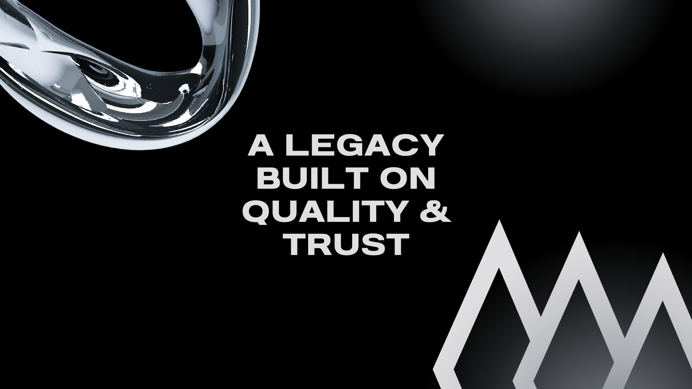
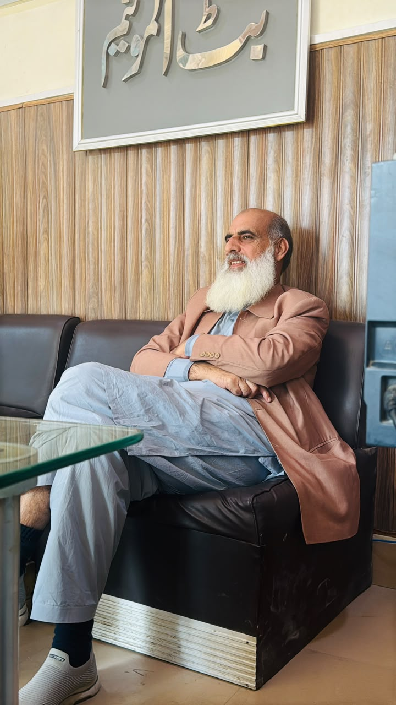
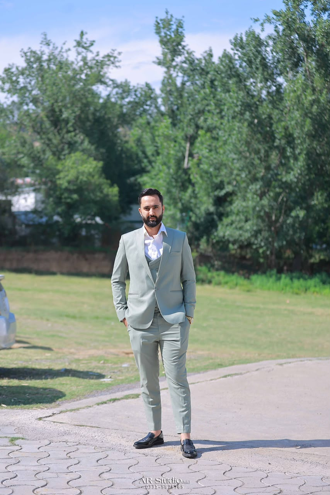

Butt Aluminium has been delivering luxury aluminium and architectural glass solutions with unmatched craftsmanship, innovation and quality for residential, commercial and industrial projects.
Butt Aluminium & Glass Trading has become one of the trusted names in the aluminium and architectural glass industry. From residential homes to large commercial projects, our commitment to quality, precision and customer satisfaction has remained unchanged.
Every project reflects our passion for innovation, premium materials and exceptional craftsmanship. We continue to build modern architectural solutions while staying true to the values that built our company.


The journey of Butt Aluminium began in 2005, when Mr. Dildar Bakht Butt set out with a clear vision—to provide the people of Pakistan with premium-quality aluminium and glass solutions built on trust, craftsmanship, and lasting value.
Starting with limited resources but an unwavering determination, he believed that every home, office, and commercial building deserved products that combined strength, elegance, and modern architectural design. Through honesty, dedication, and years of hard work, he laid the foundation of what has become one of the region's most trusted names in the aluminium and glass industry.
Over the years, Butt Aluminium earned its reputation by delivering exceptional workmanship, using premium materials, and placing customer satisfaction above everything else. Every completed project reflected the company's commitment to precision, durability, and excellence.
Today, with more than 21 years of experience, the vision of our founder continues to guide every aspect of our business. From aluminium doors and windows to curtain wall systems, spider glazing, ACP cladding, and custom glass solutions, Butt Aluminium remains committed to innovation, quality, and professional service.
What began as one man's dream has grown into a company trusted by homeowners, architects, builders, developers, and businesses across Pakistan. Inspired by the values established by Mr. Dildar Bakht Butt, we continue to build a future where every project reflects excellence, integrity, and world-class craftsmanship.
"Our foundation was built on trust. Our future is built on innovation."
In 2020, Mr. Ahmed Butt assumed the role of Chief Executive Officer (CEO), proudly carrying forward the remarkable legacy established by our founder, Mr. Dildar Bakht Butt. With a forward-thinking vision, technical expertise, and an unwavering commitment to excellence, he has successfully guided Butt Aluminium into a new era of innovation, growth, and architectural excellence.
Under his leadership, Butt Aluminium has successfully completed numerous residential, commercial, hospitality, and corporate projects across some of Pakistan's most beautiful and rapidly developing regions, including Balakot, Haripur, Islamabad, Naran, and Shogran. These projects reflect our expertise in premium aluminium doors, windows, curtain wall systems, spider glazing, ACP cladding, structural glazing, and custom glass solutions.
Ahmed Butt firmly believes that every project should combine exceptional craftsmanship, innovative architectural design, premium materials, and long-lasting performance. His dedication to customer satisfaction and continuous improvement has further strengthened Butt Aluminium's reputation as one of Pakistan's trusted aluminium and glass solution providers.
Today, his vision extends beyond national borders. He aims to establish Butt Aluminium as an internationally recognized brand by delivering world-class aluminium and glass systems while preserving the core values of integrity, quality, professionalism, and trust inherited from our founder.
"Our mission is not only to build structures, but to build trust, create lasting relationships, and set new standards of excellence in every project we deliver."

From a small vision in 2005 to becoming one of Pakistan's trusted aluminium and glass solution providers, our journey has always been driven by quality, innovation, and customer trust.
Mr. Dildar Bakht Butt established Butt Aluminium with the vision of providing premium aluminium and glass solutions built on trust, quality, and craftsmanship.
Successfully completed hundreds of residential and commercial projects while earning the trust of homeowners, architects, and builders.
Mr. Ahmed Butt became Chief Executive Officer, introducing modern technologies, innovative designs, and a forward-looking vision for the company.
Expanding Butt Aluminium across Pakistan and preparing to serve international markets with world-class aluminium and architectural glass systems.
We never compromise on quality, materials, or workmanship.
Trust, honesty, and transparency are the foundation of every relationship we build.
We embrace modern technology and architectural excellence to deliver outstanding results.
Every decision we make is focused on creating exceptional value for our clients.
Years of Experience
Projects Completed
Client Satisfaction
Major Cities Served
We use only high-quality aluminium profiles, glass systems, and imported accessories.
Elegant architectural solutions designed for homes, offices, hotels, and commercial buildings.
Skilled professionals delivering precision, durability, and attention to every detail.
We stand behind every project with dependable service and long-term customer support.
Butt Aluminium has successfully completed projects in Mansehra, Balakot, Haripur, Islamabad, Naran, Shogran and surrounding regions. We continue expanding our services throughout Pakistan while preparing for international opportunities.
Whether you're planning a luxury home, commercial building, hotel, or office project, Butt Aluminium is ready to deliver premium aluminium and glass solutions tailored to your vision.
Get a Free Quote